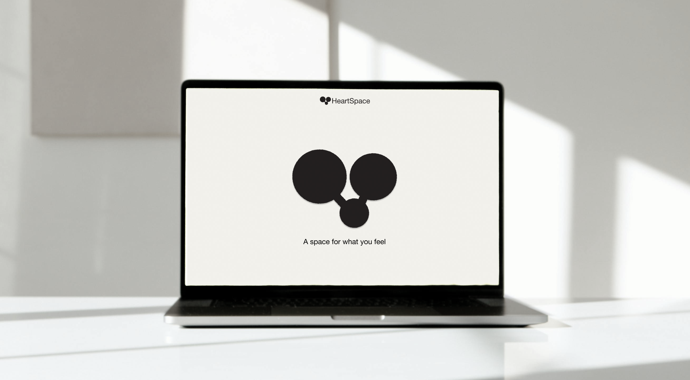
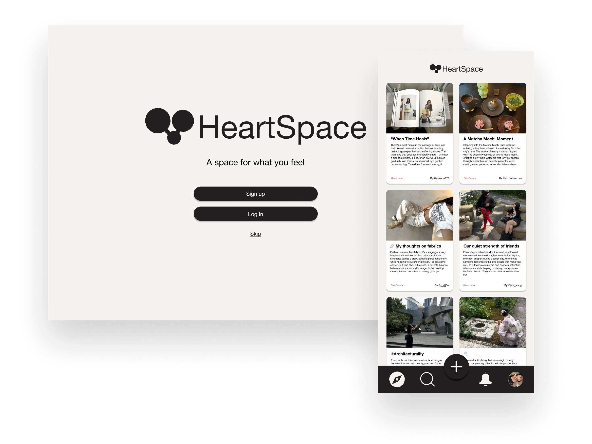
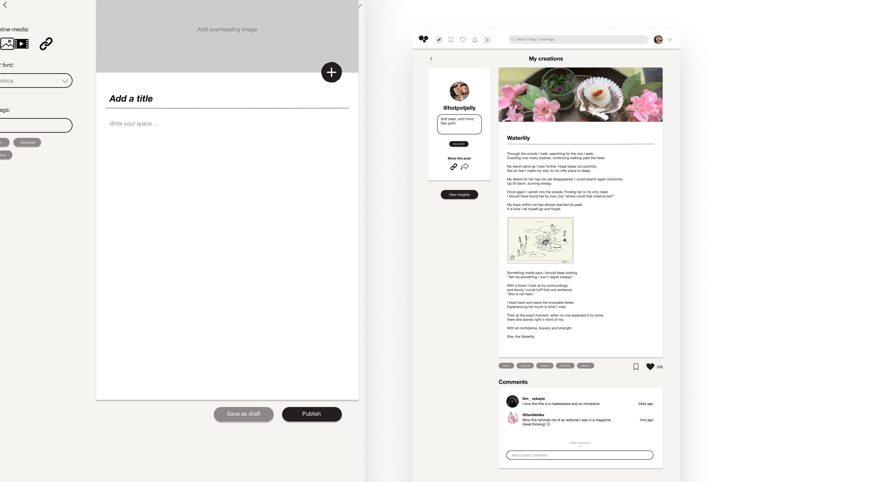
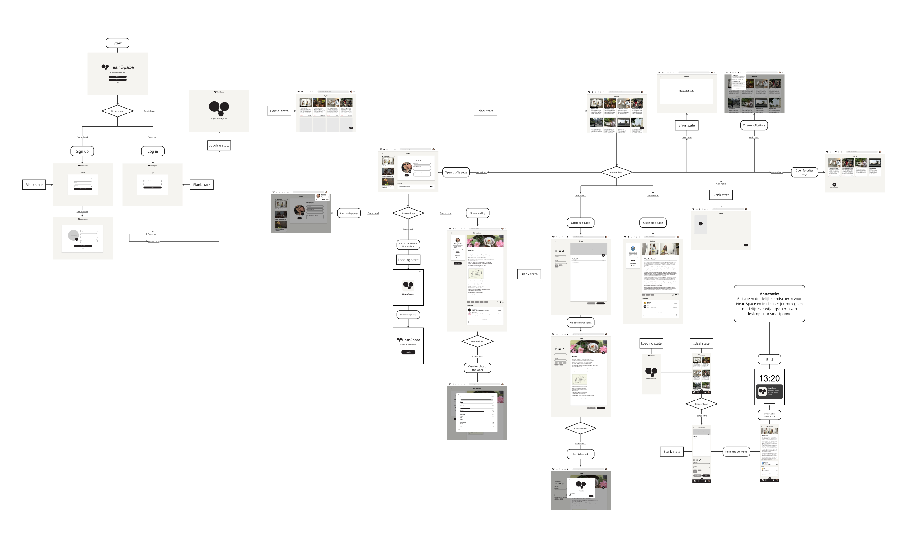
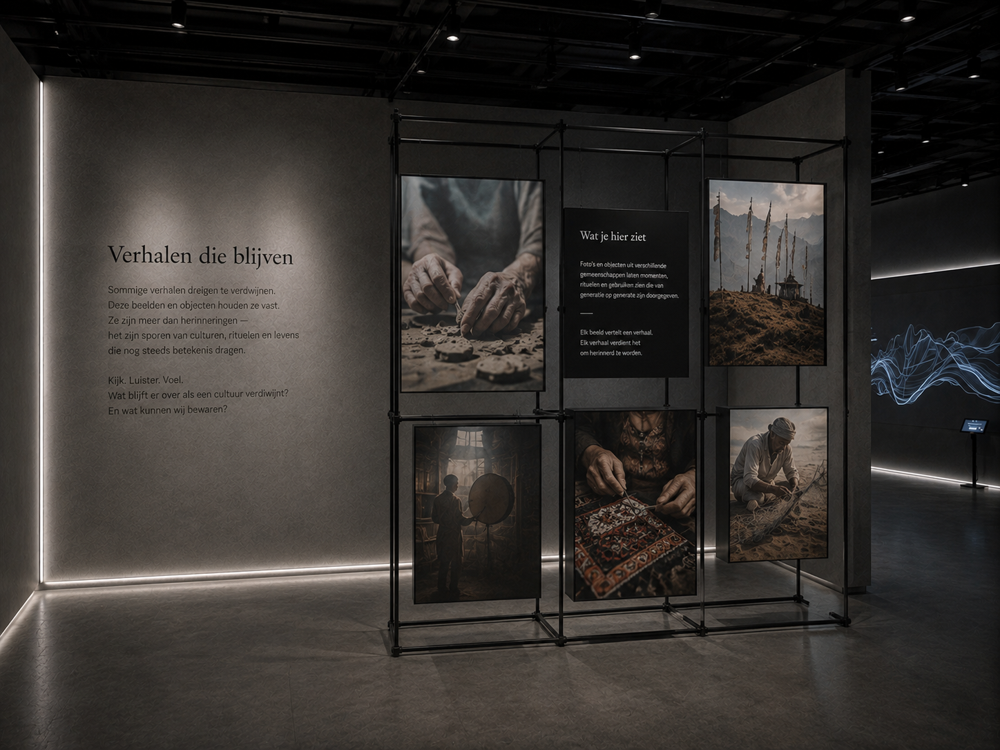
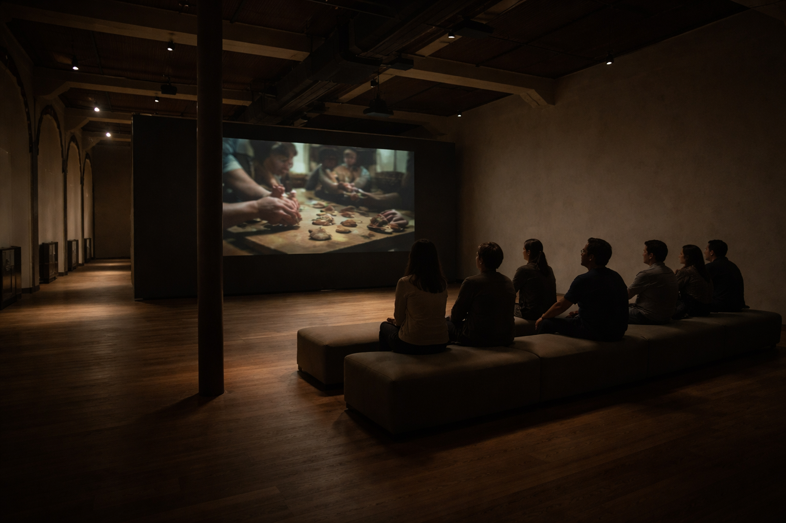
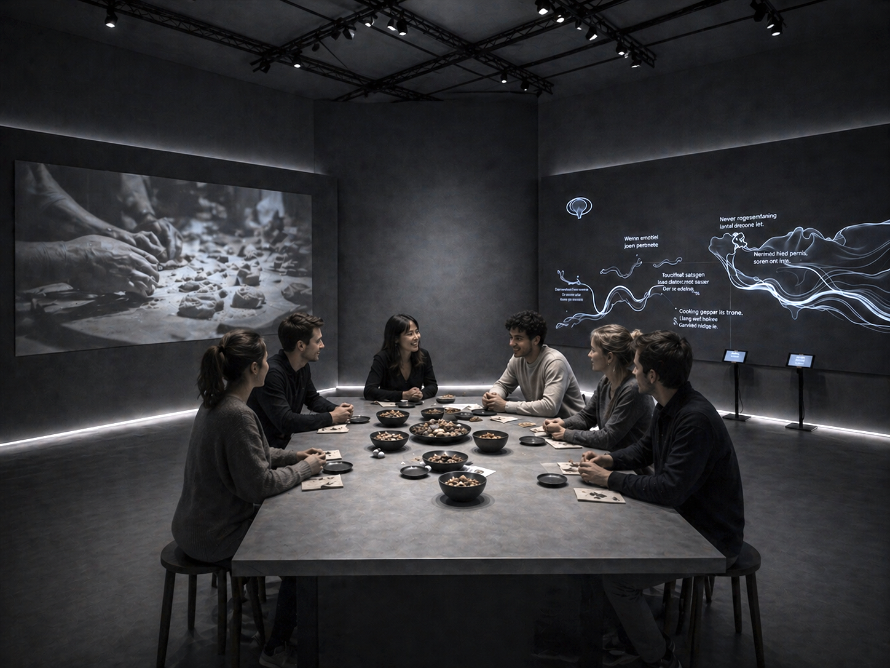
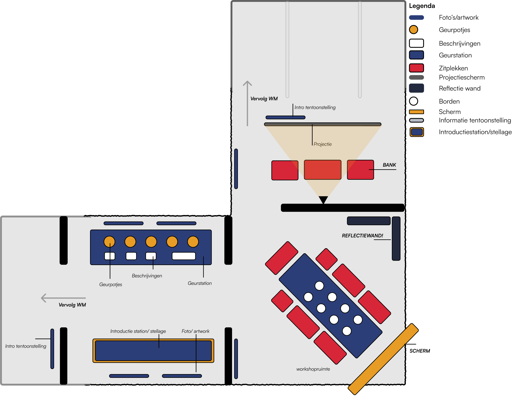

HeartSpace: A Space For What You Feel
- Role
- UX research, interface design, user journey, responsive prototype
- Tools
- Figma
HeartSpace is a responsive multi-device social journaling platform built in Figma. Grounded in user research and a defined user journey, it enables quick note-style posts on mobile, deeper writing on desktop, and lightweight engagement via smartwatch notifications.





